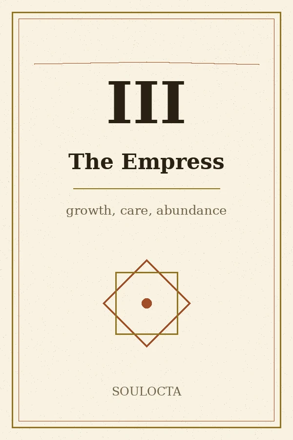

Arcana 3 · The Empress
The Empress — Arcana 3 of the Destiny Matrix
Arcana 3, the Empress, is the card of growth that is looked after. In the Destiny Matrix it marks the person who makes things grow: a garden, a business, a child, a team, a relationship. The Empress is not passive abundance. It is abundance that comes from attention — watering, feeding, protecting and waiting.

What does the Empress mean in the Destiny Matrix?
The Empress as a Destiny Matrix position means growth follows your attention. Wherever this card sits, the area improves when you tend it regularly and declines when you ignore it. The traditional image is a seated figure in a field of wheat, which is the whole meaning: the harvest depends on the season of care that came before it, not on a single dramatic act.
| Zone | Positive (+) | Negative (−) | Actionable shift |
|---|---|---|---|
| Centre | Growth through care; people feel looked after and return | Giving until empty; your mood sets the weather for everyone | Schedule your own rest like an appointment |
| Money line | Slow, steady growth; repeat customers and deepening skill | Undercharging out of love for the work | Price the care, not just the hours |
| Love line | Comfort, a warm home, a safe life together | Giving without asking back; choosing partners who need care | Keep one hour a week that is only yours |
| Talent | A growing talent that improves with daily practice | Hiding it because it feels ordinary | Practise it twenty minutes a day and make it visible |
| Karmic tail | Learning to care for yourself as well as others | Over-giving, then resenting the people you helped | Keep one kind no a week |
The Empress as your centre (E)
The Empress in the centre means your whole chart is organised around growth through care. People feel looked after near you, and they return, and they bring others. You are at your best when you have something living to tend — a project, a family, a craft — and you are at your worst when there is nothing to care for and your attention turns inward and starts to worry.
The Empress in your money line
The Empress in the money line means your income grows slowly and steadily, like a garden, not like a lottery win. The money comes from something you tend: repeat customers, a skill that deepens, a small business that compounds. Fast money usually leaves as fast as it arrives for Empress people, because it was never rooted in care.
The Empress in your love line
The Empress in the love line means you love by creating comfort: a warm home, food on the table, a life that feels safe. Your partner feels cared for in ways that are hard to name and hard to replace. That is a deep gift, and it is also the trap: you can give so completely that you stop asking for anything back, and then the giving turns into quiet resentment.
The Empress in your talents
The Empress in your talents means you have a growing talent: something that gets better the more you practise it, and that other people can feel improving. Often it is something sensory or relational — cooking, design, healing, teaching, growing things — and it improves with use rather than with study alone.
The Empress reversed, blocked or low
A blocked Empress looks like neglect, usually of yourself first. The home is untidy, the body is tired, the work you loved feels like a chore, and you cannot remember the last time you did something only because it felt good. The block is rarely a lack of love. It is usually exhaustion, and the cure is embarrassingly small: one meal cooked properly, one room tidied, one hour outside.
How to work with the Empress this month
Pick one thing that matters to you and tend it every day for a month, even for ten minutes. A plant, a skill, a relationship, a savings account — the object matters less than the rhythm. Daily attention is the Empress's whole method, and a month of it will show you more growth than a year of occasional effort.
How to turn The Empress from minus to plus
Five shifts, from minus to plus. First, I give until I am empty becomes I care for myself on the same schedule. Second, I undercharge because I love the work becomes I price the care, not just the hours. Third, I wait for a big breakthrough becomes I tend one thing a little every day. Fourth, I say yes to every need becomes I keep one kind no a week. Fifth, I hide my growing talent becomes I practise it daily and let it be seen.
Check where this energy sits in your free Destiny Matrix chart — enter your birth date and see whether The Empress is your centre, your talent, or your karmic tail. If it is, also read your money line and the compatibility calculator.
Related guides
Keep reading: destiny matrix vs numerology · destiny matrix vs tarot · destiny matrix for beginners · destiny matrix FAQ · the Chariot, arcana 7 of the Destiny Matrix · Justice, arcana 8 of the Destiny Matrix · the Lovers, arcana 6 of the Destiny Matrix · the Devil, arcana 15 of the Destiny Matrix · the Sun, arcana 19 of the Destiny Matrix · karmic tail 18-6-6, Love Magic · karmic tail 15-20-5, the Rebel · karmic tail 9-9-18, Magical Knowledge · the Magician, arcana 1 of the Destiny Matrix · the Empress, arcana 3 of the Destiny Matrix · the Emperor, arcana 4 of the Destiny Matrix · the Wheel of Fortune, arcana 10 of the Destiny Matrix · Strength, arcana 11 of the Destiny Matrix · the World, arcana 21 of the Destiny Matrix · karmic tail 15-8-11, Physical Suffering · karmic tail 21-4-10, Oppressed Soul · karmic tail 12-19-7, Warrior · karmic tail 6-17-11, Wasted Talent · all 22 arcana meanings · all karmic tail guides · Destiny Matrix compatibility calculator · what is the Destiny Matrix · how to calculate the Destiny Matrix.
Frequently asked questions
What does arcana 3, the Empress, mean in the Destiny Matrix?
Arcana 3, the Empress, means growth, care and abundance in the Destiny Matrix. The Empress marks the person who makes things grow through steady attention, and the position it sits in shows where that care produces the most growth in your life.
Is the Empress a good arcana to have as your centre?
The Empress is a strong centre arcana because it gives you the power to grow anything you tend. The risk is giving so much to others that nothing is left for you, so a centre Empress needs its own rest scheduled like an appointment.
What does the Empress mean in the money line?
The Empress in the money line means your income grows slowly and steadily, like a garden. The money comes from something you tend — repeat customers, a deepening skill, a small business that compounds — rather than from a single fast win.
What does the Empress mean in love?
The Empress in the love line means you love by creating comfort and safety. A warm home, food on the table, a life that feels safe — that is the gift. The trap is giving so completely that you stop asking for anything back, until the giving turns into resentment.